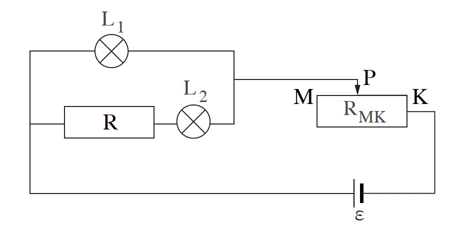

[תמונת השאלה המקורית]לא נמצאה תמונה בשם question-image.png באותה תיקייה.
ניתוח המעגל החשמלי בטרם נתחיל לפתור:
כדי לפתור את השאלה במהירות ובביטחון, חשוב להבין תחילה את מבנה המעגל ואת המשמעות של הנתון: הזרם דרך שתי הנורות שווה בכל המצבים המתוארים.
הזרם יוצא ממקור המתח ועובר תחילה דרך החלק הפעיל של הנגד המשתנה, כלומר הקטע שבין המגע הנייד \( P \) לבין הקצה \( K \).
לאחר מכן הזרם מתפצל לשני ענפים המחוברים במקביל.
בענף העליון נמצאת הנורה \( L_1 \) בלבד.
בענף התחתון נמצאים הנגד הקבוע \( R \) והנורה \( L_2 \) המחוברים ביניהם בטור.
מכיוון שהענפים במקביל, המתח על כל ענף זהה. אם בנוסף הזרמים בשני הענפים שווים, נוכל להסיק שההתנגדות הכוללת של כל ענף זהה גם היא.
תרשים סכמטי של מבנה המעגל השקול:

[תרשים סכמטי של המעגל]לא נמצאה תמונה בשם image-0.png באותה תיקייה.
סעיף א'
הרחבה מושגית: הבנה לעומק של "ערכים נקובים"
הערכים הנקובים הרשומים על נורה או מכשיר (כמו 24V, 20W) מאפשרים לנו תמיד לחשב שני נתונים קריטיים: את ההתנגדות של המכשיר ואת הזרם המקסימלי המותר דרכו עפ"י היצרן (\( I_{max} = P_{n} / V_{n} \)).
חשוב להבין: ערכים נקובים (או מקסימליים) הם הערכים שעבורם היצרן נותן אחריות. מתחת לערכים אלו המנורה תעבוד בצורה תקינה. מה קורה מעל לערכים אלו? אין אחריות! חשוב לדעת כי מתח או זרם גבוהים מהנקוב לא בהכרח גורמים לנורה להישרף מיד. בעבר אף הייתה שאלת בגרות שבה נורה המשיכה לעבוד למרות שהזרימו דרכה זרם גבוה מהמקסימלי הרשום עליה!
מה נתון: עבור הנורה \( L_1 \) נתונים הערכים הנקובים שלה:
המתח הנקוב: \( V_{1n} = 36\text{ V} \)
ההספק הנקוב: \( P_{1n} = 72\text{ W} \)
מה מחפשים: את עוצמת הזרם הזורם דרך הנורה \( L_1 \) כאשר היא פועלת בהתאם לרישום שעליה.
נוסחאות ועקרונות בשימוש:
נשתמש בהגדרת ההספק החשמלי: \( P = VI \)
ומכאן נבודד את הזרם: \( I = \frac{P}{V} \)
מסקנה: עוצמת הזרם דרך הנורה \( L_1 \) היא \( I_1 = 2.0 \, \text{A} \)
טיפ מורה:
שימו לב שבסעיף הזה בכלל לא צריך להכיר את התנגדות הנורה. כאשר נתונים גם המתח הנקוב וגם ההספק הנקוב, הדרך המהירה ביותר היא ישירות דרך \( I = \frac{P}{V} \).
סעיף ב'
מה נתון: קיים מצב שבו שתי הנורות פועלות בהתאם לרישום שעליהן.
מסעיף א' מצאנו כי הזרם דרך \( L_1 \) במצב זה הוא \( I_1 = 2\text{ A} \).
על פי הנתון הכללי בשאלה מתקיים בכל המצבים: \( I_1 = I_2 \).
מה מחפשים: את התנגדות הנגד הקבוע \( R \).
נוסחאות ועקרונות בשימוש:
1. חוק אוהם: \( V = RI \)
2. במצב של פעולה נקובה, המתח על כל נורה שווה למתח הרשום עליה.
3. ברכיבים המחוברים בטור הזרם זהה, וברכיבים המחוברים במקביל המתח על כל ענף זהה.
הצבה ופתרון:
במצב המתואר שתי הנורות פועלות לפי הרישום. לכן, מן הנתון \( I_1 = I_2 \) נקבל:
\[ I_2 = I_1 = 2 \text{ A} \]
המתח על הענף העליון שווה למתח על \( L_1 \), כלומר \( 36\text{ V} \). לכן אותו מתח פועל גם על הענף התחתון כולו. מכיוון שעל הנורה \( L_2 \) פועל במצב זה המתח הנקוב שלה, \( 6\text{ V} \), המתח על הנגד \( R \) הוא:
\[ V_R = 36 - 6 = 30 \text{ V} \]
מכיוון שהזרם בענף התחתון הוא \( 2\text{ A} \), נקבל:
מסקנה: התנגדות הנגד הקבוע היא \( R = 15.0 \, \Omega \)
טיפ מורה:
בסעיף הזה שווה לשים לב ליתרון של הנתון \( I_1 = I_2 \): ברגע שיודעים את הזרם דרך נורה אחת, מקבלים מיד גם את הזרם בענף השני, ומשם הדרך לחישוב \( R \) קצרה מאוד.
סעיף ג'
מה נתון: אותו מצב כמו בסעיף ב' - שתי הנורות פועלות בהתאם לרישום שעליהן.
לכן המתח על המערך המקבילי הוא \( V_{\text{parallel}} = V_1 = 36\text{ V} \).
הכא"מ של המקור האידיאלי הוא \( \varepsilon = 42\text{ V} \).
מה מחפשים: את ההתנגדות הפעילה של החלק \( PK \) בנגד המשתנה.
נוסחאות ועקרונות בשימוש:
1. חוק המתחים במעגל טורי: \( \varepsilon = V_{\text{parallel}} + V_{PK} \)
2. חוק אוהם: \( V = RI \)
3. הזרם דרך הנגד המשתנה הוא הזרם הכולל במעגל: סכום זרמי שני הענפים.
הצבה ופתרון:
ראשית נמצא את מפל המתח על החלק הפעיל של הנגד המשתנה:
מסקנה: ההתנגדות הפעילה של החלק \( PK \) היא \( R_{PK} = 1.5 \, \Omega \)
טיפ מורה:
כדי לחשב התנגדות של קטע בנגד משתנה לא חייבים לדעת היכן בדיוק נמצא המגע. מספיק לדעת את מפל המתח על הקטע ואת הזרם הכולל העובר בו. זהו יתרון גדול של השילוב בין חוק אוהם לבין ניתוח הזרמים בענפים המקבילים.
סעיף ד'
מה נתון: מסעיף ב' מצאנו כי \( R = 15\,\Omega \).
נסמן ב-\( I_2 \) את עוצמת הזרם דרך הנורה \( L_2 \), וב-\( V_1 \) את המתח על הנורה \( L_1 \).
מה מחפשים: לבטא את \( V_1 \), המתח על הנורה \( L_1 \), כפונקציה של \( I_2 \), עוצמת הזרם דרך הנורה \( L_2 \).
נוסחאות ועקרונות בשימוש:
1. חוק אוהם: \( V = RI \)
2. בענף התחתון הנגד \( R \) והנורה \( L_2 \) מחוברים בטור, לכן ההתנגדות הכוללת של הענף היא \( R + R_{L2} \).
3. אותו מתח פועל גם על הנורה \( L_1 \), כי שני הענפים במקביל.
הצבה ופתרון:
בענף התחתון הנגד \( R \) והנורה \( L_2 \) מחוברים בטור, ולכן המתח על כל הענף הוא:
\[ V_{\text{parallel}} = I_2(R + R_{L2}) \]
אבל אותו מתח בדיוק הוא גם \( V_1 \), משום שהנורה \( L_1 \) מחוברת במקביל לענף התחתון. לכן:
\[ V_1 = I_2(R + R_{L2}) \]
מסקנה: \( V_1 = (R + R_{L2}) I_2 \)
טיפ מורה:
גם כאן מתקבל קו ישר העובר בראשית הצירים, אבל הפעם לשיפוע יש יחידות של התנגדות: \( \Omega \). לכן מן השיפוע של הגרף שבסעיף הבא אפשר יהיה למצוא את ההתנגדות הכוללת של הענף התחתון, ומשם לחלץ את \( R_{L2} \).
סעיף ה'
מה נתון: יש לנו גרף קו ישר של \( V_1 \) כפונקציה של \( I_2 \).
מסעיף ב' ידוע כי \( R = 15\,\Omega \).
מן השאלה ידוע כי המתח הנקוב של הנורה \( L_2 \) הוא \( V_{2n} = 6\text{ V} \).
מה מחפשים: בעזרת הגרף לחשב את ההספק הנקוב של הנורה \( L_2 \), שערכו נמחק.
נוסחאות ועקרונות בשימוש:
1. שיפוע של קו ישר: \( m = \frac{\Delta y}{\Delta x} \)
2. מסעיף ד': \( V_1 = (R + R_{L2})I_2 \), ולכן השיפוע הוא \( m = R + R_{L2} \)
3. חישוב הספק נקוב: \( P = \frac{V^2}{R} \)
הצבה ופתרון:
מן הגרף נוח לבחור שתי נקודות מדויקות: ראשית הצירים \( (0,0) \) והנקודה \( (2,36) \).
מסקנה: ערך ההספק של הנורה \( L_2 \) הוא \( P_{2n} = 12.0 \, \text{W} \)
טיפ מורה:
כאשר הגרף נקי וליניארי, בחרו את הנקודות הברורות ביותר האפשריות. כאן השימוש ב-\( (0,0) \) וב-\( (2,36) \) הופך את חישוב השיפוע לפשוט, וכיוון שהשיפוע מייצג התנגדות כוללת של ענף, הוא נותן מידע פיזיקלי ישיר ולא רק יחס חסר יחידות.
סעיף ו'
מה נתון:
המגע הנייד נקבע בנקודה \( K \), ולכן התנגדות הנגד המשתנה מתאפסת: \( R_{PK} = 0 \).
מקור המתח מוחלף במקור לא אידיאלי בעל כא"מ \( \varepsilon_1 = 48\text{ V} \).
במקרה זה שתי הנורות פועלות בהתאם לרישום שעליהן, ולכן המתח על המעגל החיצוני הוא \( 36\text{V} \).
מה מחפשים: את נצילות המעגל, \( \eta \).
נוסחאות ועקרונות בשימוש:
1. נצילות המקור: \( \eta = \frac{P_{\text{useful}}}{P_{\text{source}}} \)
2. במקור לא אידיאלי מתקבל גם הקשר המקוצר: \( \eta = \frac{V_{ab}}{\varepsilon_1} \)
הצבה ופתרון:
כאשר שתי הנורות פועלות בהתאם לרישום שעליהן, המתח על המעגל החיצוני הוא המתח על \( L_1 \), כלומר:
טיפ מורה:
בסעיפים על מקור לא אידיאלי כדאי לזהות מהר מהו מתח ההדקים. ברגע שמבינים שהרכיבים החיצוניים מקבלים כאן \( 36\text{ V} \), אפשר לחשב את הנצילות ישירות מתוך יחס המתחים \( \frac{V_{ab}}{\varepsilon_1} \).
נוסח השאלה המקורית
[תמונת השאלה המקורית]לא נמצאה תמונה בשם question-image.png.